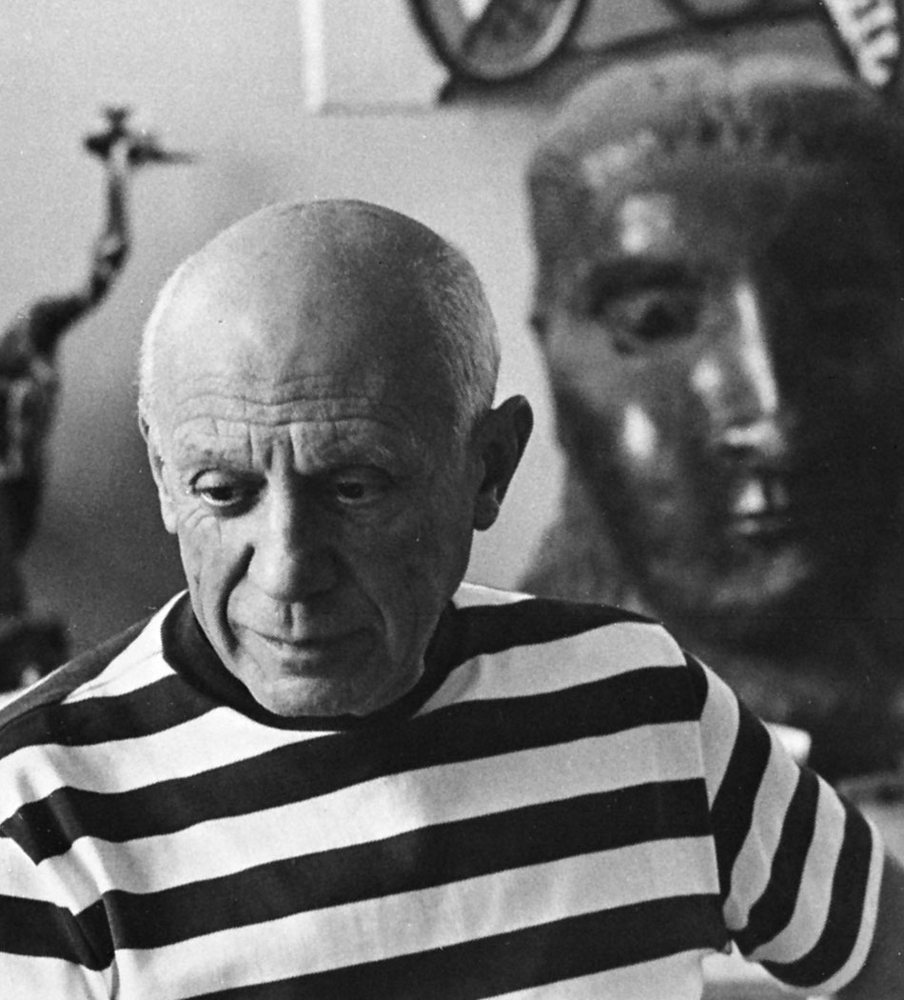
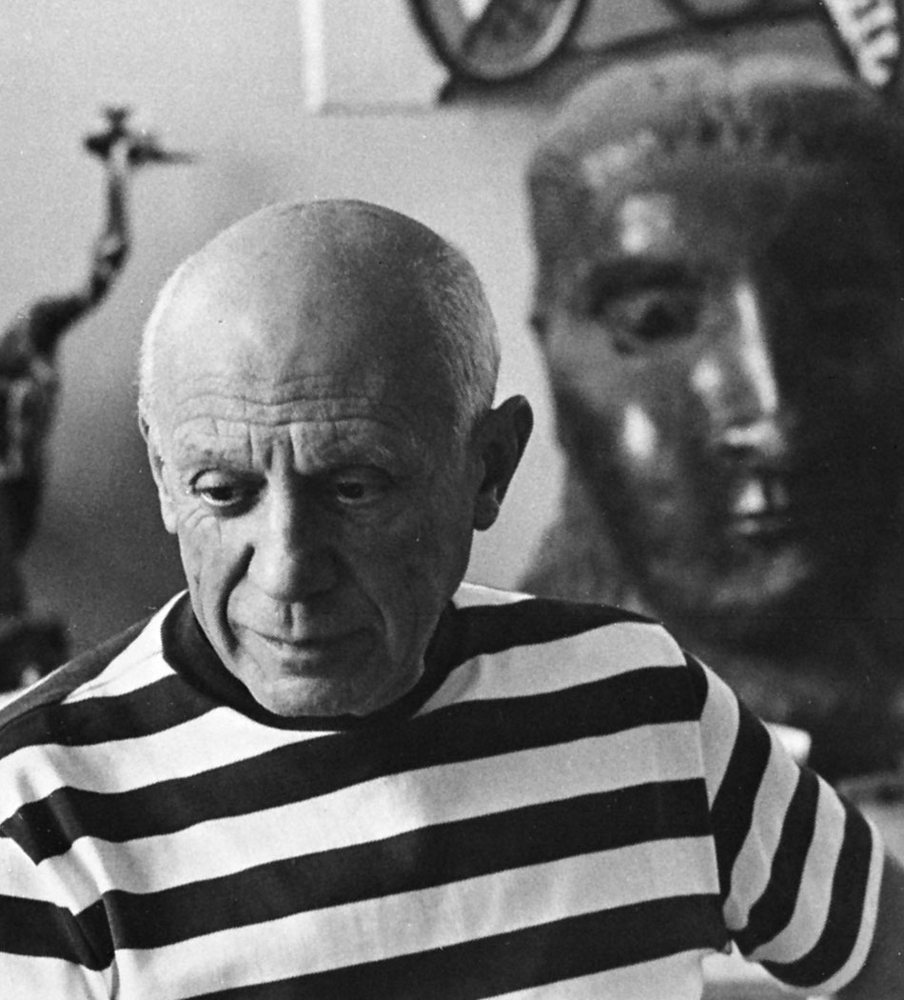

My Favourite hobby is
Drawing
About
I like to draw in my free time. I mostly draw pictures of objects around me like fruits or plants. I use different mediums to draw like colour pencils, oil pastels and paint. During birthdays of my parents, sister and friends I gift my best drawings to them. I also enjoy doing craft using origamy paper. I watch youtube videos to learn new ways to make origamies. Mostly I make different animals using paper.
My Inspiration
I am mostly inspired by seeing what other artists like Vincent van gogh,Pablo Picaso, Leonardo do vinci ect have drawn or painted. I am also inspired by nature and animals. I really like to draw because I can show my feelings in my drawings.
 
